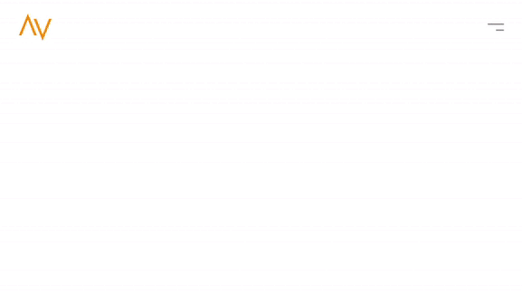
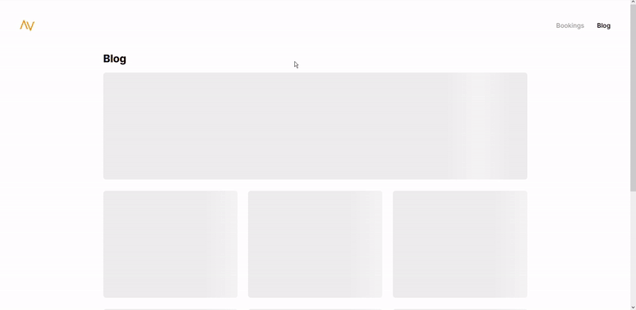

Componenten
Deze pagina is een overzicht van de componenten van de front-end.
Functionele componenten
Functionele componenten zijn eigenlijk componenten die vaker gebruikt kunnen worden zoals Image, Pagination of Carousel.
Image
De component Image zorgt er voor dat er een placeholder komt voor een afbeelding als deze nog niet geladen is. De placeholder verdwijnt zodra de afbeelding volledig geladen is en op die zelfde plek verschijnt dan een img tag.
Hoe te gebruiken:
import { Image } from '../../functions/Image'; ... <Image src={URL} alt={ALT} fit="cover" />
Resultaat:

Pagination
De component Pagination zorgt er voor dat alle producten of blogitems automatisch worden opgedeeld in pagina's. Bij deze component is het noodzakelijk om de items per pagina, totale items, de items zelf en de component waar het uiteindelijk de data moet invullen mee te sturen.
Hoe te gebruiken:
// Pagination inladen import { Pagination } from '../../components/functions/Pagination'; // Component inladen waarin de data gevuld moet worden import { SimpleProductItem } from '../../components/eCommerce/products/thumbnails/SimpleProductItem'; ... // items array wordt ingeladen via Socket.io const TotalItems = 8; ... // Pagination oproepen <Pagination itemsPerPage={TotalItems} totalItems={items.length} items={items} Component={SimpleProductItem} />
Resultaat:

Carousel
Carousel zorgt er voor dat de afbeeldingen van bijvoorbeeld producten mooi worden weergegeven in een carousel. De component Carousel maakt ook gebruik van de component Image.
Hoe te gebruiken:
// Importeer de component import { Carousel } from '../../../functions/Carousel'; ... // Geef een array mee met de afbeeldingen <Carousel images={product.images} fit="contain" />
Resultaat:

Standaard componenten
Bij standaard componenten worden bijvoorbeeld navigatie en footer bedoeld. Voor deze componenten is een standaard component gemaakt. Deze gemaakte componenten bevatten minimale stijling. Deze componenten worden in de /src/index.js aangeroepen.
Navigatie
Er zijn twee verschillende gemaakte navigatie componenten, deze bevinden zich in /src/components/navigation/type. In deze componenten staat hoe beschreven hoe de React functies, useState en useEffect werken.
useState: open is gelijk aan false. Als er op de hamburger van de navigatie wordt geklikt dan moet de onClick functie zijn werk doen. Als er op geklikt wordt als open false is wordt het statement true en als open gelijk is aan true wordt het statement false. ReactJS update de classes automatisch, dus in de className komt er active achter als statement open gelijk is aan true. Meer informatie over useState
const [open, setOpen] = useState(false); ... <button onClick={()=>setOpen(!open))} className={open ? "nav_toggle active" : "nav_toggle"}> Menu button </button>

useEffect: Deze funtie wil pas gaan uitvoeren nadat de render op het scherm is vastgelegd. Standaard wordt de useState na elke voltooide render opnieuw uitgevoerd, maar er kan ook voor gekozen worden dat deze alleen te activeren zijn wanneer bepaalde waarden gewijzigd zijn. Meer informatie over useEffect.
const [offset, setOffset] = useState(false); ... useEffect(() => { window.onscroll = () => { if(window.pageYOffset > 10){ setOffset(true); }else{ setOffset(false); } } }, []);

👍 Tip van Kevin
Om de navigatie zo dynamisch mogelijk te maken heb ik componenten gemaakt zoals Links, Logo en CartLink. Hierin worden alle interne links in gemaakt en hergebruikt bij verschillende componenten zoals de navigatie en footer.
<Links close={closeMenu}/> // Links.js {process.env.REACT_APP_ECOMMERCE === 'true' ? (process.env.REACT_APP_CALENDAR !== 'true' ? <NavLink onClick={closeMenu} to="/products" className="nav_link">Products</NavLink> : <NavLink onClick={closeMenu} to="/bookings" className="nav_link">Bookings</NavLink>) : null} <CartLink onClick={closeMenu} isEcommerce={process.env.REACT_APP_ECOMMERCE==='true' ? true : false} />
Navigatie implementeren in de website
Voeg een bestand toe in de map /src/components/navigation/type, bijvoorbeeld met de naam GravityNav. Het pad hoeft in de /src/index.js uiteindelijk alleen aangepast te worden naar de bestandsnaam. De naamgeving Nav kan als variabele hetzelfde blijven. Zodra deze Nav in de Router wordt meegegeven blijft de navigatie zichtbaar op elke pagina.
// Index.js import Nav from './components/navigation/type/GravityNav'; ... ReactDOM.render( ... <Router> <Nav /> ... </Router> )
Footer
Voor de footer geldt precies hetzelfde zoals de navigatie.
// index.js import Footer from './components/footer/SimpleFooter'; ... ReactDOM.render( ... <Router> ... <Footer/> </Router> ... )
Systeem variabele componenten
Om de systeem variabelen te gebruiken worden de pagina's alleen ingeladen als dit aangegeven staat in de .env. Dit heeft met de pagina's te maken. De pagina's van bijvoorbeeld producten worden ingeladen met componenten van producten. Zodat er in de pagina's alleen data wordt opgehaald en in de componenten gestopt wordt.
Data ophalen
Data ophalen vanuit de back-end gebeurt met Socket.io. Socket.io is een library die realtime, bidirectionele en op gebeurtenissen gebaseerde communicatie tussen de browser en de server mogelijk maakt.
useEffect(()=>{ try { socket.open(); socket.emit("product",{ id: props.match.params.id }, (product) => { "type"in product&&"error"===product.type&&setError(!0); setProduct(product); }); } catch (err) { console.error(err); setError(false); } return () => { socket.close(); } },[props.match.params.id])
👍 Tip van Kevin
De Socket.io instellingen worden bepaald in de Front- en Back-end. In de Front-end zijn deze instellingen te vinden in /config/Socket.js. In de Back-end documentatie is meer te vinden over Socket.io.
Componenten aanroepen
In de pagina's van eCommerce en Blog worden de losse componenten aangeroepen. De bedoeling van deze componenten is dat er meerdere componenten met dezelfde functies komen voor bijvoorbeeld verschillende platformen. Om bijvoorbeeld een blog item te laten weergeven moet er data meegestuurd worden met het component. In het component komt de data binnen en hierna kan er besloten worden wat er mee gedaan kan worden.
// /pages/blog/Details.js return <SimpleBlogDetail blog={blog}/> // SimpleBlogDetail export const SimpleBlogDetail = ({blog}) => { console.log(blog); }